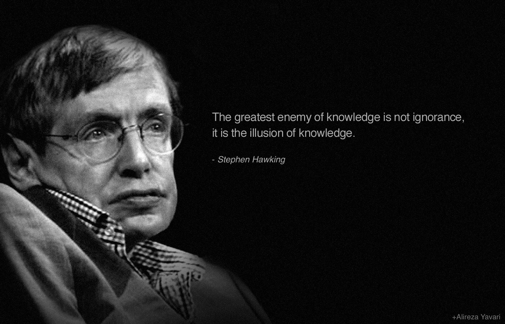

Stephen Hawking
Theoretical Physicist

Stephen William Hawking was English Therotical Physicist, Cosmologist and Author.
- Born 8 January 1942 Oxford, England
- Died 14 March 2018 (aged 76) Cambridge, England
- Occupation Scientist and astrophysicist
- Subjects of Study Black Hole, Mini Black Hole, Space-Time
- Known For Hawking radiation and the book A Brief History of Time
- Spouse(s) Jane Wilde(m. 1965; div. 1995) , Elaine Mason(m. 1995; div. 2007)